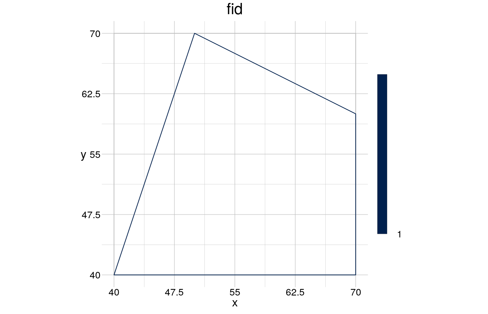
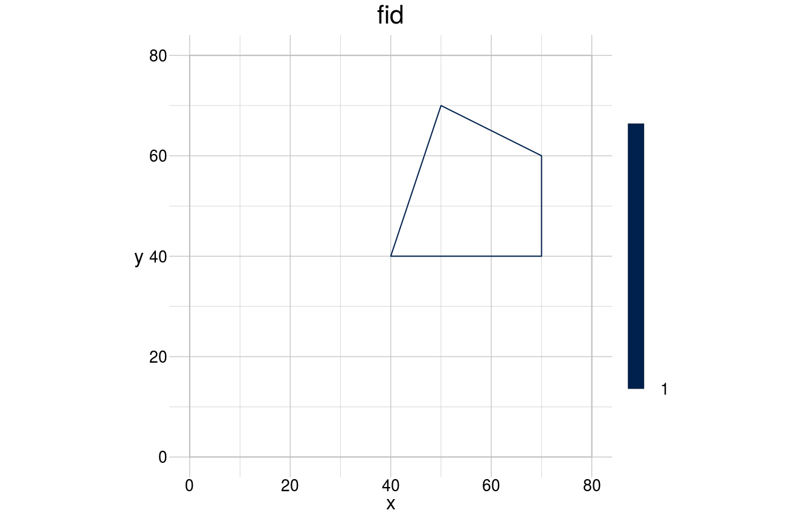
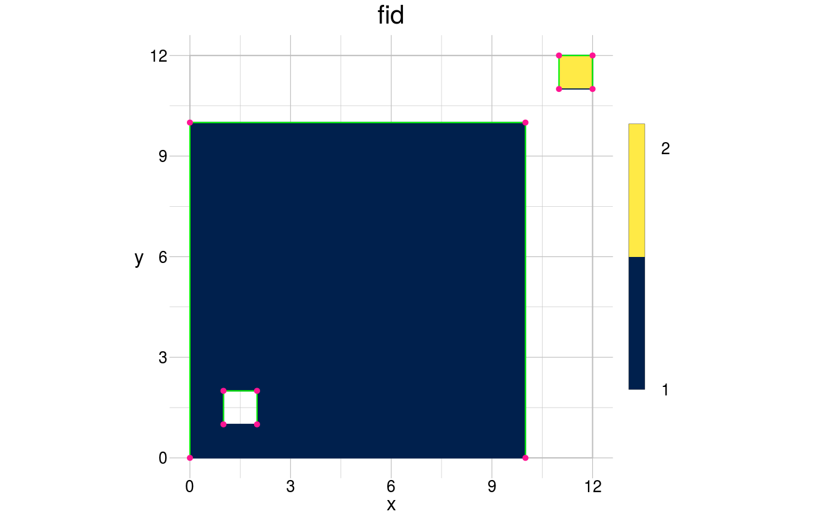
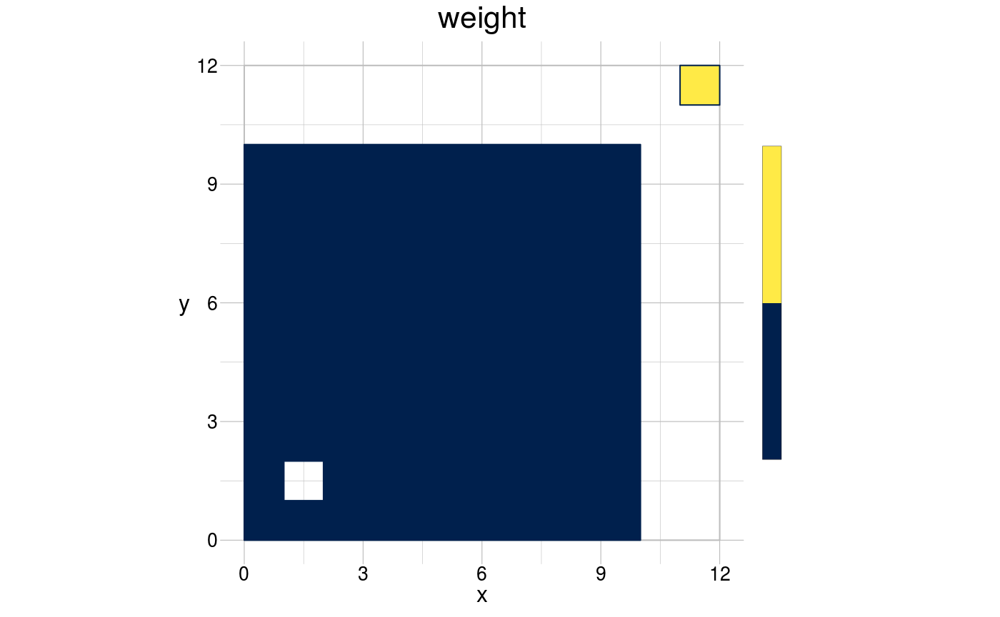
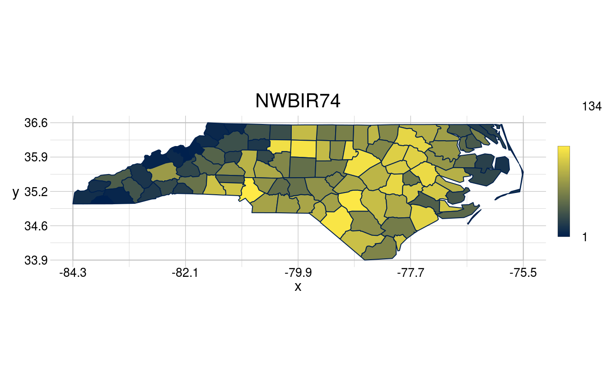
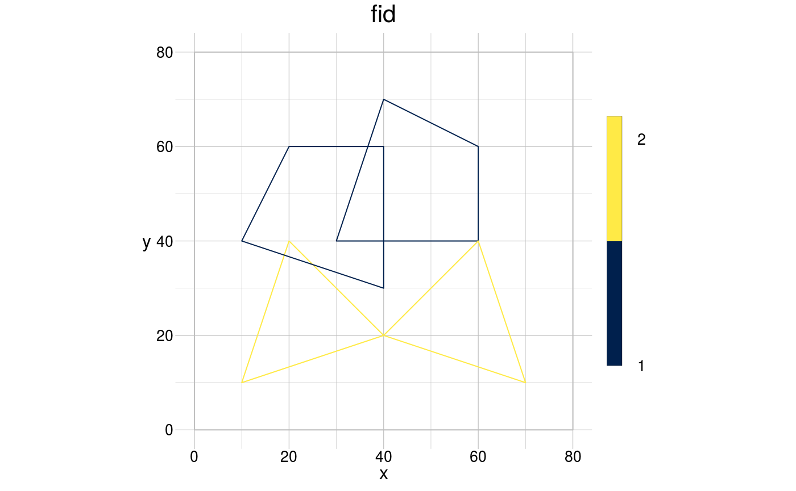

vignettes/introduction.Rmd
introduction.Rmdgeometr was developed due to a perceived lack of functionality that would allow manipulating geometries at vertex level, and all the possible applications that follow thereof.
The idea of geometr is to enable you to create and process geometries intuitively, thereby turning you into a geometer. Using geometr you typically provide a set of coordinates that outline geometries either as so-called anchor and control vertices (parametrisation), or by clicking into an open plot (sketching). Depending on the use-case, you’d then either modify individual vertices or the overall geometry.
Moreover, as there seems to be an ever increasing collection of spatial classes - to which geometr adds yet another - a standardised approach to deal with the properties of objects of those classes is proposed by geometr.
geom
geometr comes with the S4 class geom. A geom stores only those information that can’t be derived on the fly from its generic values. An example of derived information would be the extent/bounding box, which actually is a statistical measure, the range of coordinate values, and thus not a generic value of the geometry. Moreover, this class is deliberately by default not geographic in nature. It can be transformed into a geographic object by assigning a coordinate reference system. One could say the default CRS is the cartesian coordinate system.
We learn a lot about the class by simply creating and visualising a geom:
library(geometr)
library(tibble)
coords <- tibble(x = c(40, 70, 70, 50),
y = c(40, 40, 60, 70),
fid = 1)
(aGeom <- gs_polygon(anchor = coords))
#> class : geom
#> type : polygon
#> features : 1 (4 vertices)
#> window : 40, 70, 40, 70 (xmin, xmax, ymin, ymax)
#> extent : 40, 70, 40, 70 (xmin, xmax, ymin, ymax)
#> scale : absolute
#> crs : NA
#> attributes : 2 (fid, gid)
visualise(geom = aGeom)
As an S4 class, geom consists of a set of slots, which we can inspect with str():
str(aGeom)
#> Formal class 'geom' [package "geometr"] with 7 slots
#> ..@ type : chr "polygon"
#> ..@ vert :Classes 'tbl_df', 'tbl' and 'data.frame': 4 obs. of 4 variables:
#> .. ..$ fid: num [1:4] 1 1 1 1
#> .. ..$ vid: int [1:4] 1 2 3 4
#> .. ..$ x : num [1:4] 40 70 70 50
#> .. ..$ y : num [1:4] 40 40 60 70
#> ..@ attr :Classes 'tbl_df', 'tbl' and 'data.frame': 1 obs. of 2 variables:
#> .. ..$ fid: num 1
#> .. ..$ gid: num 1
#> ..@ window :Classes 'tbl_df', 'tbl' and 'data.frame': 4 obs. of 2 variables:
#> .. ..$ x: num [1:4] 40 40 70 70
#> .. ..$ y: num [1:4] 40 70 70 40
#> ..@ scale : chr "absolute"
#> ..@ crs : chr NA
#> ..@ history:List of 1
#> .. ..$ : chr "geometry was created as 'polygon'"The core of this class are three tables that characterise the coordinates, the feature attributes and the window. This presentation of coordinates and features in separate tables is an important aspect that distinguishes geometr from other spatial classes in R.
@vert is a table that contains all information related to the vertices, with one row for each vertex. By default there are at least the columns fid (feature ID), vid (vertex ID), x and y, the two-dimensional coordinate values. The feature ID relates coordinates to features and thus common attributes and the vertex ID enumerates all vertices per feature.@attr is a table that contains all feature attributes, with one row for each feature. By default there are at least the columns fid (feature ID) and gid (group ID). The group ID captures groups of features that would be part of the same multifeature in a “simple feature (sf) and is thus by default the same as fid except when the geom has been derived from a simple multi-feature.@window is a table that defines the frame within which the geometry would be plotted. This is sort of a second extent that may be bigger (or smaller) than extent/bbox and which determines the relative position of the vertices when plotting.window <- tibble(x = c(0, 80),
y = c(0, 80))
aGeom <- setWindow(x = aGeom, to = window)
visualise(geom = aGeom)
A geom either has the feature type:
point, when none of the vertices are connected to other vertices,line, where vertices with the same fid are connected following the sequence of their order, without the path closing in itself andpolygon, where vertices with the same fid are connected following the sequence of their order and the path closes in on itself.visualise(geom = gtGeoms$polygon, fillcol = fid)
visualise(geom = gtGeoms$line, linecol = "green", new = FALSE)
visualise(geom = gtGeoms$point, linecol = "deeppink", new = FALSE)
Points and Lines are implemented quite straightforward in this data model, but polygons, which may contain holes, are a bit trickier. In geometr they are implemented as follows:
fid make up one polygon, irrespective of it containing holes or not.Most properties of a geom are accessible via specific functions. They can thus be extracted, modified and re-assigned, which is the basis for various “meta-operations”, such as reprojecting or appending additional attributes to features.
# Get properties of a geom
getVertices(x = gtGeoms$polygon)
#> # A tibble: 15 x 4
#> fid vid x y
#> <dbl> <int> <dbl> <dbl>
#> 1 1 1 0 0
#> 2 1 2 10 0
#> 3 1 3 10 10
#> 4 1 4 0 10
#> 5 1 5 0 0
#> 6 1 6 1 1
#> 7 1 7 1 2
#> 8 1 8 2 2
#> 9 1 9 2 1
#> 10 1 10 1 1
#> 11 2 1 11 11
#> 12 2 2 11 12
#> 13 2 3 12 12
#> 14 2 4 12 11
#> 15 2 5 11 11
getTable(x = gtGeoms$polygon)
#> # A tibble: 2 x 2
#> fid gid
#> <dbl> <dbl>
#> 1 1 1
#> 2 2 2
getWindow(x = gtGeoms$polygon)
#> # A tibble: 4 x 2
#> x y
#> <dbl> <dbl>
#> 1 0 0
#> 2 0 12
#> 3 12 12
#> 4 12 0
getCRS(x = gtGeoms$polygon) # does not contain any value and is thus only valid in the cartesian coordinate system
#> [1] NA
getHistory(x = gtGeoms$polygon)
#> [[1]]
#> [1] "geometry was created as 'polygon'"
# Set properties of a geom ...
# ... such as feature attributes
newAttrs <- tibble(fid = c(2, 1), weight = c(10, 5))
newGeom <- setTable(x = gtGeoms$polygon, table = newAttrs)
#> Joining, by = "fid"
getTable(x = newGeom)
#> # A tibble: 2 x 3
#> fid gid weight
#> <dbl> <dbl> <dbl>
#> 1 1 1 5
#> 2 2 2 10
visualise(geom = newGeom, fillcol = weight)
In an attempt to standardise the handling of various different spatial formats, these functions have been developed as generics and they come with a couple of methods for the most-used spatial classes, such as Raster*, sp, sf. Originally this was developed to accommodate the modular nature of rasterTools but is now offered as a stand-alone. One can for instance use getVertices() to get a standardised output of the coordinate values across all supported spatial classes.
getVertices(gtGeoms$point)
#> # A tibble: 12 x 4
#> fid vid x y
#> <int> <dbl> <dbl> <dbl>
#> 1 1 1 0 0
#> 2 2 1 0 10
#> 3 3 1 10 10
#> 4 4 1 10 0
#> 5 5 1 1 1
#> 6 6 1 1 2
#> 7 7 1 2 2
#> 8 8 1 2 1
#> 9 9 1 11 11
#> 10 10 1 11 12
#> 11 11 1 12 12
#> 12 12 1 12 11
getVertices(gtSP$SpatialMultiPoints)
#> # A tibble: 8 x 4
#> fid vid x y
#> <int> <dbl> <dbl> <dbl>
#> 1 1 1 0 0
#> 2 2 1 10 0
#> 3 3 1 10 10
#> 4 4 1 0 10
#> 5 5 1 11 11
#> 6 6 1 11 12
#> 7 7 1 12 12
#> 8 8 1 12 11
getVertices(gtSF$multipoint)
#> # A tibble: 8 x 4
#> fid vid x y
#> <int> <dbl> <dbl> <dbl>
#> 1 1 1 0 0
#> 2 2 1 10 0
#> 3 3 1 10 10
#> 4 4 1 0 10
#> 5 5 1 11 11
#> 6 6 1 11 12
#> 7 7 1 12 12
#> 8 8 1 12 11To outline the rationale for starting the development of geometr, I first want to describe the aspects of sp and sf that seemed improvable to me.
All this makes clear that geom is an improvement of the sp classes with a stance on storing geometric information that differes from the sf classes. The aim is to clearly separate geometric information and feature attributes and thereby make the geometric information more accessible.
While geometr relates geometry and attributes by assigning the same fid to both, sf achieves this by storing them in the same row. sf confuses this trick with simplicity and relies at the same time on introducing the classes
sf, which comprises attributes and geometries of one simple feature,sfg, which comprises only the geometry of one simple feature andsfc, which represents the geometries of all simple features and thus spans, in contrast to the former two, across all simple features.While sf makes geometries accessible to the tidy workflow, it replaces the list-apocalypsis of the sp package with the class-disaster we find now.
geometr is clearly superior to sp classes because both coordinates and attributes, including an ID that clearly relates them, are available as properly accessible data.frames/tibbles. Both, coordinates and attributes can be easily retrieved either by calling the respective getters or by a simple call to the @ function.
Separating coordinates and features allows addressing coordinates just as simply as features and separately from each other
I am interested in addressing each single feature, also in a multi-feature. this can be achieved by calling the fid or the gid, if interested in the multi*feature
sf increases complexity, the listed nature of geometries requires additional code-logic to extract geometric information; too many classes with different behaviour, which renders re-use of code/scripts overly complicated
https://r-spatial.github.io/sf/articles/sf1.html** problem with “multi* features”; for me the “multi”-nature is not part of the feature, but is an attribute, hence I have set up everything so that there are no multi-features and that the features that are transformed from other spatial classes contain a column grp that captures this informaiton. with the function gGroup() one can then add groups also to non-multi-features**
library(sf)
#> Linking to GEOS 3.5.1, GDAL 2.2.2, PROJ 4.9.2
nc <- st_read(system.file("shape/nc.shp", package="sf"))
#> Reading layer `nc' from data source `/home/steffen/R/x86_64-pc-linux-gnu-library/3.5/sf/shape/nc.shp' using driver `ESRI Shapefile'
#> Simple feature collection with 100 features and 14 fields
#> geometry type: MULTIPOLYGON
#> dimension: XY
#> bbox: xmin: -84.32385 ymin: 33.88199 xmax: -75.45698 ymax: 36.58965
#> epsg (SRID): 4267
#> proj4string: +proj=longlat +datum=NAD27 +no_defs
visualise(geom = gt_sf(nc), fillcol = NWBIR74)
coords <- tibble(x = c(30, 60, 60, 40, 10, 40, 20),
y = c(40, 40, 60, 70, 10, 20, 40),
fid = c(1, 1, 1, 1, 2, 2, 2))
twoGeoms <- gs_polygon(anchor = coords, window = window)
visualise(geom = twoGeoms)
rotatedGeoms <- gt_rotate(geom = twoGeoms, angle = 90, about = c(40, 40))
visualise(geom = rotatedGeoms, new = FALSE)
An object of class geom can be created with various functions, such as the default gs_point(), gs_curve() and gs_polygon() but also with functions that create specific geometric shapes such as gs_hexagon(), which creates exclusively hexagonal polygons, or gs_tiles(), which creates a regular tiling geometry.